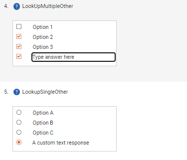

GSE-422: In Frameworks, the ‘Other Please Specify’ input type is now provided.
It is available in Single-Select/Other, Multi-Select/Other, and Yes/No/Other type questions.
When the user selects that option for a question response, a text box opens and the user can enter the other response within that text box. The text box will accommodate up to 1000 characters. Note: When uploading responses using a Microsoft Excel file, you must enclose your ‘Other’ response within quotation marks.
These questions function the same as the others in all other applicable areas of the questionnaire and question functionality (creation and editing such questions with the UI or through SFTP or Microsoft Excel template import, reporting, export, etc.).
They are supported in Table type questions (including export) through the use of three response-type columns (Single-Select/Other, Multi-Select/Other, and Yes/No/Other) and text box.

The following functionality is unrelated, but also new.
The delimiter used in the response option column for importing questions has been changed from a comma to “::”. This change allows users to add commas to their column headings and response options for Table type questions.
Also, the logic for uploading Table type questions has been improved in the following ways:
The KPI reference of the table question is now used as an identifier to which columns can be added. For example, if the KPI reference of the table is 1, the rows that have a 1 in the Parent Table ‘KPI Reference’ column will be added to the table. The question title then becomes the content of the column header.
The question title for individual columns get mapped to the column header.
Any response type (excluding a table within a table) can be added to the Table type question.
It is no longer possible to add columns with identical headings to the same table. If that is attempted, an appropriate error message will be displayed.
For rows in the upload that represent columns, anything the user attempts to upload outside of the fields below will be ignored: